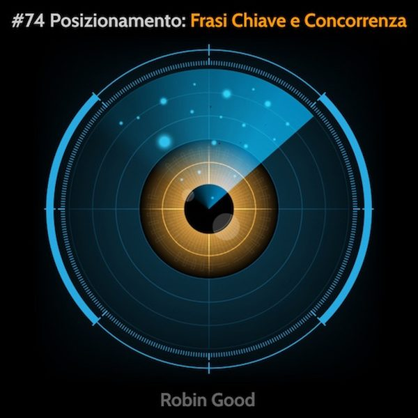

Posizionamento: Analisi Frasi-Chiave e Concorrenza

Internet è come una libreria infinita, dove il tuo sito web è come un libro fra milioni di altri.
Affinché la libraia possa suggerire il tuo libro a chi cerca soluzioni ad uno specifico problema o interesse, è di vitale importanza la scelta, non solo del titolo, ma anche della categoria / argomento nel quale il tuo libro verrà classificato.
"Fare posizionamento", quando si parla di marketing online, significa identificare nella maniera più precisa possibile, il titolo del tuo libro e le sue categorie di riferimento di modo da poter far si che la libraia (Google) non abbia alcun dubbio sul argomento specifico di cui ti occupi.
Essendo la libreria immensa, va da sé, che più il tuo libro (e quindi la tua attività) è specifica nel risolvere un determinato problema, interesse, esigenza, e più il tuo libro avrà facilità nell'essere suggerito dalla libraia.
E' altresì importante cercare di non pubblicare libri su argomenti per i quali ci sono già centinaia di titoli.
Ma come si fa' in pratica a fare questo lavoro di "posizionamento"? Quali sono i passi pratici che vanno svolti?
E' semplice.
a) Da un lato è necessario scoprire e individuare tutte le frasi-chiave rilevanti che i tuoi potenziali clienti potrebbero utilizzare per cercarti online, quando ancora non ti conoscono.
b) Dall'altro è indispensabile vedere qual è il livello di domanda mensile che c'è per ciascuna frase-chiave. Quante sono le persone che ogni mese chiedono a Google come risolvere quello specifico problema che risolvi anche tu?
c) Infine, è d'obbligo andare a misurare qual è il livello di concorrenza presente intorno a quella specifica esigenza, e cioé quanti siti web già ci sono là fuori che si sono posizionati per risolverla.
Ascolta questa puntata del podcast per saperne di più.
Risorse consigliate:
• AnswerthePublic
Per trovare frasi-chiave rilevanti in qualsiasi settore e nicchia di mercato
Prova gratuita.
https://answerthepublic.com
• Neil Patel UberSuggest
Per trovare frasi-chiave rilevanti in qualsiasi settore e nicchia di mercato
In grado di misurare livello di domanda e concorrenza.
Gratuito.
https://neilpatel.com/ubersuggest/
• SEOZoom.it
Strumento professionale di analisi SEO e posizionamento.
Misura livello di domanda, concorrenza.
Prova gratuita. A pagamento.
https://seozoom.it
• PosizionamentoMotoridiRicerca
Corso online in Italiano, pratico, per apprendere tutti i passi necessari
per posizionare qualsiasi azienda.
Prova gratuita.
https://PosizionamentoMotoridiRicerca.com
-------------
Info Utili
• Ascolta e condividi questo podcast:
https://gopod.me/RobinGood
• Dammi feedback:
critiche, commenti, suggerimenti, idee e domande unendoti al gruppo Telegram @RobinGoodPodcastFeedback.
• Diventa sostenitore:
esprimi la tua soddisfazione e incoraggiamento diventando anche tu un sostenitore attivo di questo podcast qui: www.patreon.com/Robin_Good
• Rimani aggiornato:
https://facebook.com/RobinGoodItalia/
• Conoscimi meglio:
attraverso la newsletter settimanale.
Contiene mie storie personali e riflessioni
e tre nuovi tool utili per chi comunica online:
http://robingood.it/toptools-newsletter
Per qualsiasi richiesta scrivi a:
Ludovica.Scarfiotti@robingood.it
Musica: "Both of us" by Idealism - disponibile su Bandcamp: https://chillhop.bandcamp.com/track/both-of-us